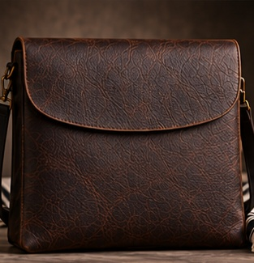
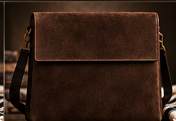
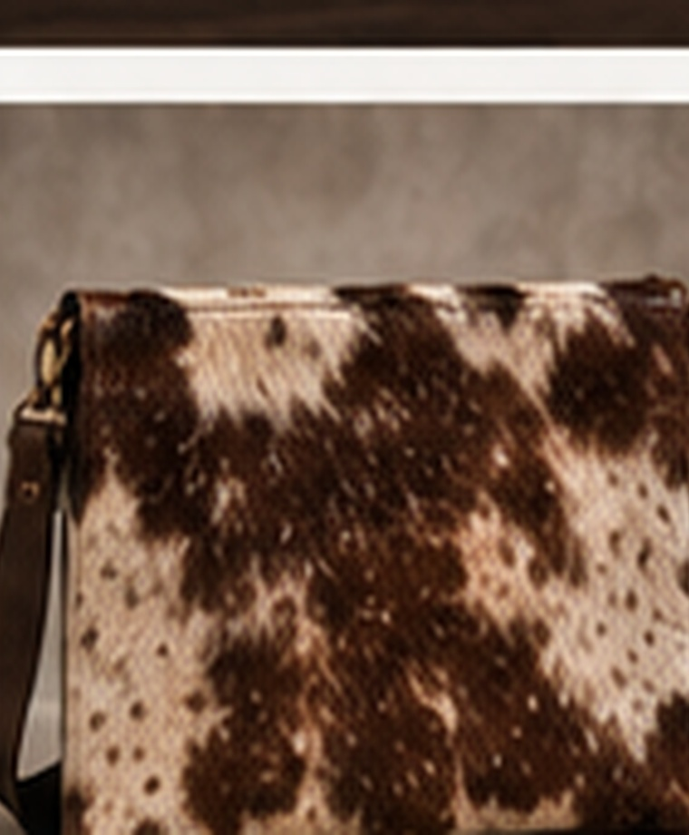
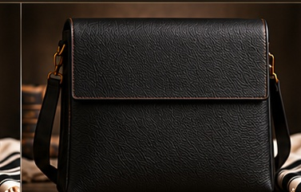
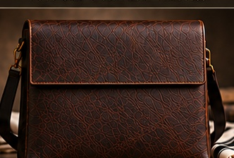
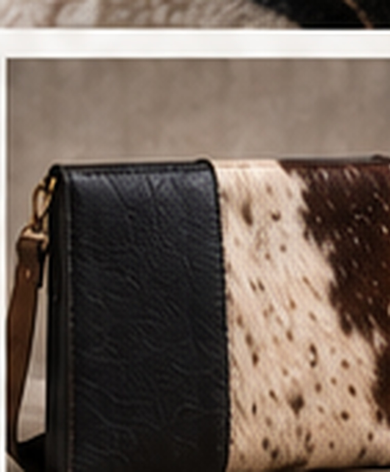
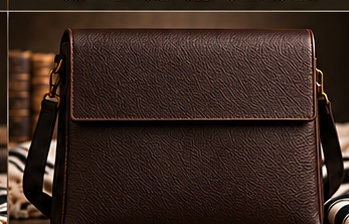
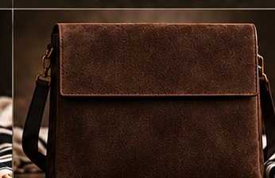

Design 01
The Fold
Fold-over full-grain leather
Leather and natural-hide tallis bags with cleaner, more architectural forms. Every design includes a detachable shoulder strap for easy carry.

Fold-over full-grain leather

Layered wrap leather

Natural hide panel

Structured black leather

Vertical strap detail

Leather and natural hide

Minimal diagonal seam

Full natural hide